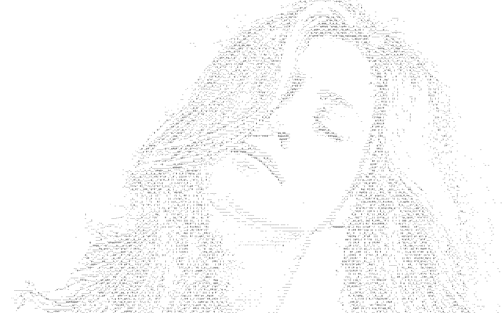
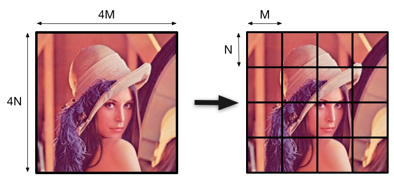
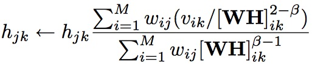
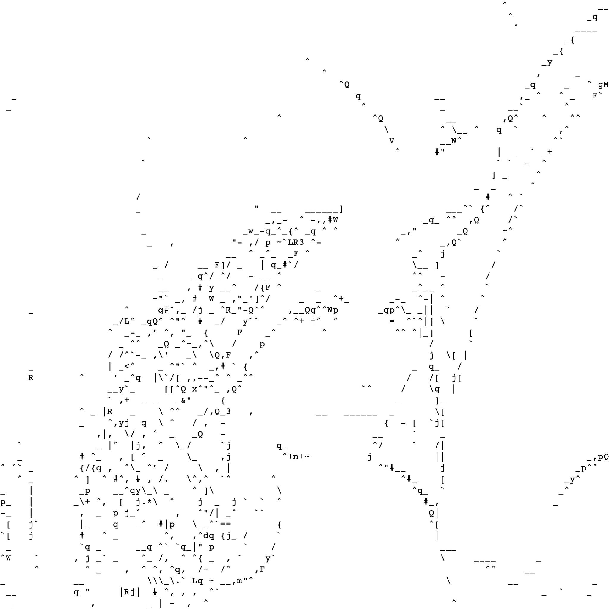
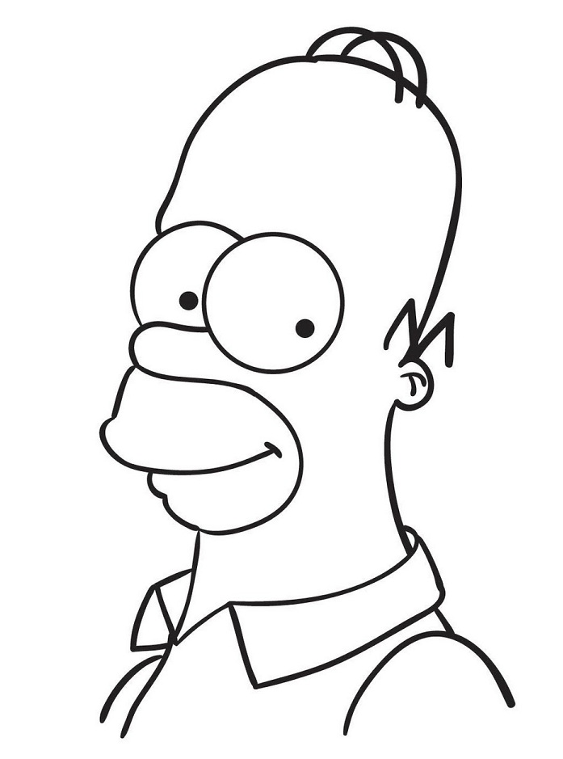
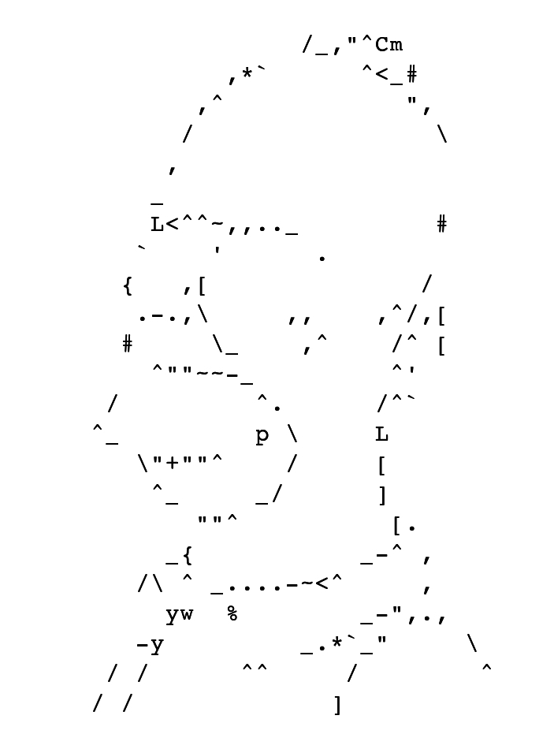
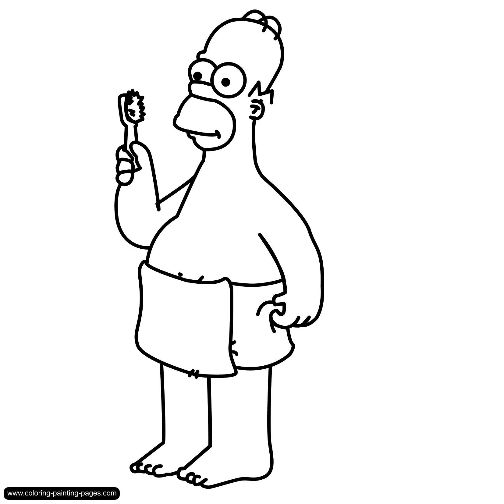
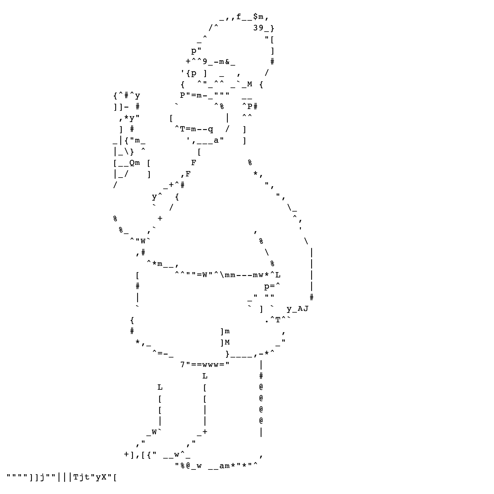
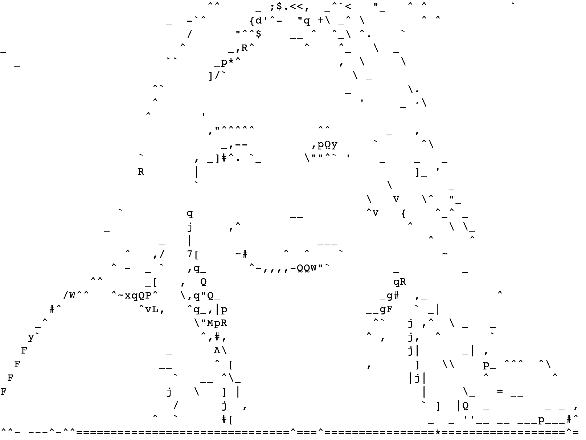

ASCII Art

ASCII art is cool. And so, I wrote an image-to-ASCII converter. It's nothing really novel, actually, but I thought I'll write one anyway as an exercise.
Since I have been doing a lot of R programming lately, I decided to use R to write the ASCII converter. Yes, I'm aware that it is not the ideal choice: more lines of code, and probably poorer performance. But these weren't really my concerns, and besides, on modern computers, I found that my code "ASCII-fied" images within minutes. This post is to share what I have made and explain how it works. All of the code and some accompanying examples can be found on GitHub here.
The code is an almost direct implementation of the content from this wonderful paper by Paul D. O’Grady and Scott T. Rickard titled Automatic ASCII Art Conversion of Binary Images Using Non-Negative Constraints. It can be found in the IET repositories here.
Right, so let's get started. I've divided this post into 3 key sections:
- Setup: What you need before you run the R code to convert the image to ASCII. e.g. generating glyphs from fonts, global constants, etc..
- ascii.R: Basically, the meat of this post. What the code is, how it is organized, and why it works.
- Results: The most visually appealing section of this post. Some of the ASCII-fied images, including the famous Lena!
1. SETUP
So the very first step is to decide on which font to use, which can be a little tricky (comic sans not even considered, for obvious reasons). The authors in the paper suggest using a monospace font, which makes sense and simplifies the problem. I end up using the same Courier monospace font used by the authors in their experiments.
The next step is to generate the glyphs from the font. Glyphs are basically individual characters; they could be a numeral, letter of the alphabet, punctuation, etc. Fonts are digital files that contain information on how to generate these characters (glyphs) in accordance to some common design styles (also known as the font's typeface). We can use the font-files to generate any supported glyphs as image files, which we will use to replace blocks of our original image when converting it to ASCII. We use 95 classic 7-bit-ASCII characters -- 26*2 = 52 alphabets (upper/lower-case), 10 numerals (0-9), 32 characters (just look down at your keyboard, and count the number of characters you can type out with/without the shift key. E.g. !@#$%^*), and the blank (white-space) character -- to generate the ASCII art. We could easily extend this to include the extended 8-bit ASCII set (includes special characters such as "é"), but for now, we limit ourselves to the 95 printable characters detailed above.
Anyways, enough of background.. how do we generate these glyph images from a font-file? Well, given that I have no background on this topic, I turned to the interwebs for a solution, and found a neat little Ruby script written by yukinoraru, which can be found on his/her GitHub repository here. The script is straightforward enough to use -- edit the source font-file you want to use, adjust the FONT_SIZE variable to desired size (I use "19x38"), and edit the FIRST and LAST variables (I use "\u0020" and "\u007e" respectively -- characters 32 to 126 in the ASCII table) to specify the start/end ASCII number for glyphs you want to generate. Running the script generates individual font-glyph image files based on your settings, and saves them as PNG files, named as their ASCII number (e.g. the "!" character is number 33 in the ASCII table, and would be generated as 33.png).
Eventually, for reasons I shall not go into, I end up using the JPG file format for all glyph and source images. You can easily convert the PNG glyph files from the above step to JPG using ImageMagick, or whatever suits your jimmies.
So far, we've made good progress -- we have 95 glyph images in the JPG format, and they are all extracted from the Courier monospace font library. We will convert our input (JPG) image file into an ASCII image that uses these 95 glyph images. I store these glyph images in the folder "Courier-Glyphs".
2. ASCII.R
This is where things get interesting, and where we actually start writing the ASCII converter (in R). Before I start sharing code snippets, however, let me try and give a very quick and intuitive description of how we are going to achieve this conversion. If you are interested to learn about the technique in greater detail, I recommend that you read the paper I quoted above.
Basically, we are trying to approximately reconstruct the input image using the available glyphs. The input image is broken up into 2-D blocks, where each block is the same size as a glyph (I use "19x38" -- width x height). The goal is to find the closest glyph to replace each image-block, i.e. match glyphs with the closest 2-D color-distribution of each image-block. The problem can be represented as a matrix equation:
V ≈ WHwhere V is the matrix generated from the input image, W is the matrix generated from the glyph images, and H is the weights matrix that is iteratively updated and is eventually used to decide on the glyphs to use to generate the ASCII image. We use a winner-takes-all approach: the glyph with the closest match to an image-block is assigned to that image-block. There is an obvious loss of information with this approach, but this is the artistic beauty inherent in ASCII art anyways. This method is known as non-negative matrix factorization (NMF), details of which can be found in the paper again. Right then, hopefully that's enough to get started, let's dive into some code.
We only need the R jpeg package, which we load by calling library(jpeg) at the beginning. We then define some global constants:
#declare global constants num_glyphs <- 95 glyph_size <- 19*38 beta <- 2 #SED = 2, KLD = 1 epsilon <- 0 #threshold num_iterations <- 500 #number of H update iterations
The constants are mostly self-explanatory. beta is the variable that controls the cost function update, which can be set to 1 for KLD, or 2 for SED. Details on both choices can be found in the paper. I use the SED method for the examples shared in this post, generally because I find it produces slightly more appealing results to me. There is no performance penalty using either.
We then convert the input image to grayscale, using the luminosity method. For a sanity check, if the input image is already in grayscale, we simply move on and set variable bw_img appropriately.
#read in image img <- readJPEG("input.jpg") if (length(dim(img)) == 3){ #convert image to grayscale using luminosity method -- 0.21 R + 0.72 G + 0.07 B bw_img <- matrix(, nrow = nrow(img), ncol = ncol(img)) for (i in 1:nrow(img)){ for (j in 1:ncol(img)){ bw_img[i,j] <- 0.21*img[i,j,1] + 0.72*img[i,j,2] + 0.07*img[i,j,3] } } } else { bw_img <- img }
Now that we've read in the JPG image, and converted it to grayscale (if necessary), we have the matrix bw_img, which is simply grayscale values between 0 and 1, inclusive, for each pixel in the original image. We now need to break this 2-D matrix structure into image-blocks, based on the size of the glyphs. The figure below shows how an image can be broken into image-blocks. In this case, the blocks are rather big, as we are breaking the image into only 16 blocks.

Each block is the size of one glyph, and hence will eventually be replaced by one character. At this point, it might seem silly that we are going to recreate Lena using only 16 ASCII characters, but bear with me. In practice, the blocks are of smaller size, and hence, giving us better granularity and resolution to produce a clearer, better defined ASCII image output.
Right, so what if the input image size is not a nice multiple of glyph size? I.e. I can't break the image into a nice whole number of image-blocks.. what can I do? Well, we can simply pad the original image with ones for any extra rows and columns until the image size is a nice multiple of the glyph size. Why pad with ones? Because in grayscale, one is white, which hopefully would just produce some inconspicuous extra whitespace in the final output ASCII image. I'm not going to explain how to "one pad" the image, it's fairly straightforward and you can look into the code to understand how I achieved it.
So how do we construct matrix V after we have broken the image into image-blocks? We simply take each image-block, unroll it as a column vector, and iteratively build matrix V one column at a time. So if we take the example figure of Lena above again, the dimensions of our matrix V would be (M*N) x 16, where (M*N) is number of rows of matrix V, and 16 is number of columns of matrix V. Why? When you unroll an image block, there would be M*N elements, resulting in a column-vector of length M*N. There would be 16 such image-blocks, hence, 16 columns in matrix V. Here is what the code looks like to construct matrix V:
g_row <- 38 #height of glyph = nrow(glyph_matrix) = N g_col <- 19 #width of glyph = ncol(glyph_matrix) = M P <- nrow(bw_img) #height of image Q <- ncol(bw_img) #width of image num_blocks_per_row <- P / g_row num_blocks_per_col <- Q / g_col V <- matrix(, nrow = g_row*g_col, ncol = num_blocks_per_row*num_blocks_per_col) for (i in 1:num_blocks_per_row){ for (j in 1:num_blocks_per_col){ v <- vector() #construct column-vector of image-block for (x in 1:g_col){ for (y in 1:g_row){ v <- c(v,bw_img[(i-1)*g_row+y,(j-1)*g_col+x]) } } V[,(i-1)*num_blocks_per_col+j] <- v } }
Note that P and Q are the dimensions of the image after it has been resized and one-padded, as described earlier.
Let's now construct matrix W using the 95 glyphs we generated in the section earlier.
#read in glyphs to construct the matrix W W <- matrix(, ncol = num_glyphs, nrow = glyph_size) glyphDir <- "./Courier-Glyphs/" for (i in 32:126){ #32:126 --> numbering of glyph file name filename <- paste(glyphDir,i,".jpg",sep="") glyph <- readJPEG(filename) glyph <- as.vector(glyph) #column-wise unroll l2norm <- sqrt(sum(glyph^2)) glyph <- glyph/l2norm W[,i-31] <- glyph }
The intuition is the same here as well. We have glyph images, which are of size image-block. We can simply unroll each glyph as a column-vector, which gives us a set of possible columns we want to try and fit to reconstruct the original image. Matrix W, just like V, remains constant througout the runtime. Note that each glyph is rescaled by its L2-norm. This step is important, as it rescales the pixels to reflect a color-weight-distribution instead of raw pixel values. Since it is a winner-takes-all approach, the rescaling helps the convergence process. Finally, the dimensions of matrix W, referring back to the Lena example above again, would be (M*N) x 95, as there are 95 possible glyphs in our current implementation.
Alright, so we're almost done. We are left with the matrix H, which is the matrix that stores the weights, and is iteratively updated to refine the glyph selected for each image-block. The dimensions of matrix W is 95 * (number of image blocks), or 95 * 16 for the Lena example above. Each column has 95 rows, which represent weights to select one of the possible 95 glyphs. We have to update these weights iteratively for each column, which represent each of the image-blocks. The update function is the heart of this implementation, as it ultimately decides the performance of the converter. This, incidentally, was also the hardest, yet shortest (in number of lines of code), to write. Here is the mathematical formulation of the update function given in the paper:

Here is how I wrote it in R. Note that we update the H matrix for num_iterations specified above, and %*% is the matrix-multiplication operator in R. Also, W is initialized with random positive non-zero numbers.
for (t in 1:num_iterations){ WH <- W %*% H WH_num <- V/(WH^(2-beta)) WH_den <- WH^(beta-1) H_next <- H * (t(W) %*% WH_num)/(t(W) %*% WH_den) H <- H_next #sanity check to make sure we don't get infinities/NaNs H_vec <- as.vector(H) H_vec[!is.finite(H_vec)] <- 0 H <- matrix(H_vec,nrow = num_glyphs, ncol = num_blocks_per_row*num_blocks_per_col) }
The hard part about this chunk of code was to express the mathematical formulation of the update function above as a bunch of single-shot linear algebra matrix operations (transpose, matrix-multiplication, etc). Once that mind-bending part was done, the code was rather straightforward and only required a few lines. I also initially wrote a naive serial version which updated H matrix values one-at-a-time, but that turned out to be extremely slow and inefficient. I've commented out that code in the final version, but if you're interested, you can have a look and see why and how nested for-loops with irregular memory access patterns can kill performance. Functionally, both update implementations produce identical results.
And voila, that is pretty much it. The final steps are pretty easy, so I won't spend too much space explaining them. Once all the desired number of iterations have finished, you identify the maximum H value in each column. The row-index of the maximum value in each column is the glyph number that you should use to replace that particular image-block from the original image. Doing this for all image-blocks, you will end up reconstructing the original image using ASCII characters. You just have to be careful that you reconstruct the image in the exact reverse order in which you constructed matrix V. Then, once you have the reconstructed matrix, you can write it out as a JPG file using the jpeg R package!
3. RESULTS
As mentioned above, I use the SED cost function, and hence, the beta variable is set to 2 for the results shown in this section. I also found that I needed to run a fair number of iterations to get better results. Usually, more than 100 iterations would do, but for large images, I ran at least 500 iterations to get appealing results. If you find that your output image, instead of whitespace, is selecting underscores (_) or dashes (-), then you probably need to run the converter for more number of iterations. Also, because of the size of the glyphs (19*38), I realized that the input image has to be rather large to get accurate results. Stick to images that are at least approximately 1000x1000 pixels in size.
Lena (Original) |
Lena (ASCII) |
|  | |
Homer (Original) |
Homer (ASCII) |
|  |  |
Homer 2 (Original) |
Homer 2 (ASCII) |
|  |  |
| .. and the scariest one of them all... | |
Jennifer Aniston (Original) |
Jennifer Aniston (ASCII) |
|  |
Well, that's all there is to this post for now. Hope you enjoyed the little tutorial, and if you have any questions, feel free to contact me!